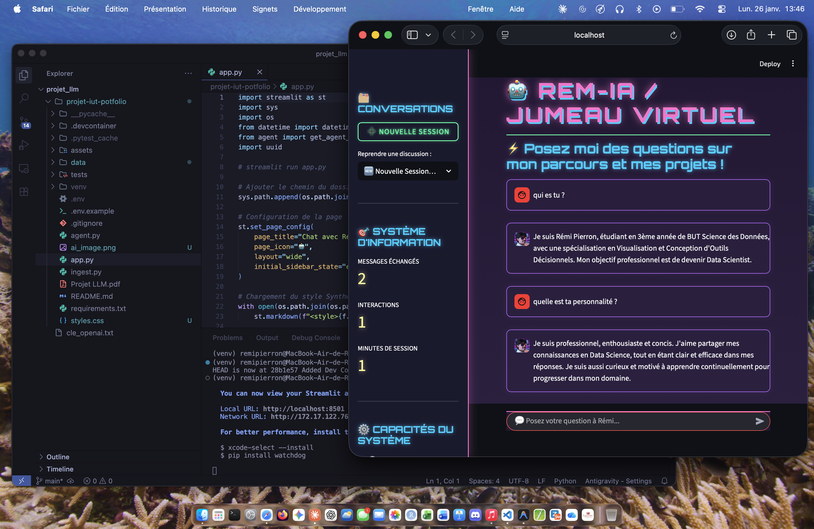

L'objectif de ce projet était de développer un chatbot capable de répondre aux questions des visiteurs de mon portfolio en utilisant des modèles de langage avancés. Le chatbot devait être capable de comprendre les questions posées, d'extraire les informations pertinentes de mon portfolio, et de fournir des réponses précises et utiles. Pour cela, j'ai utilisé des technologies telles que Python, GPT pour le traitement du langage naturel, et Upstash pour la gestion de la base de données.
Le projet comporte plusieurs parties telles que la rédaction de fichier Markdown contenant les informations sur moi-même, un script d'ingestion des données dans la base Upstash, un script pour la gestion du chatbot, et un script streamlit pour l'interface utilisateur. J'ai aussi mis au point un système de gestion des conversations pour améliorer l'expérience utilisateur en utilisant Upstash Redis pour stocker les échanges.
La partie la plus difficile a été l'indexation des données dans Upstash, car il a fallu s'assurer que les informations étaient correctement structurées pour une récupération efficace par le chatbot.
Ce projet m'a permis de renforcer mes compétences en développement de chatbots, en traitement du langage naturel avec GPT, et en gestion de bases de données avec Upstash. J'ai également amélioré mes compétences en Python et en développement d'interfaces utilisateur avec Streamlit.